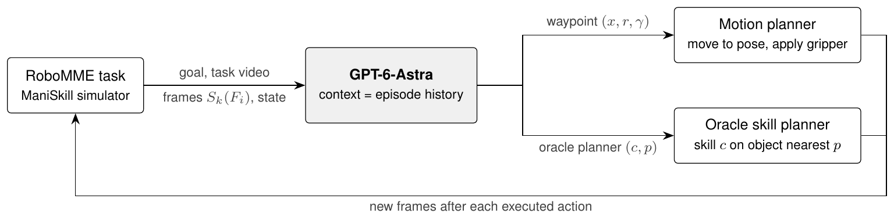
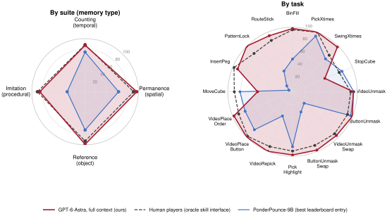
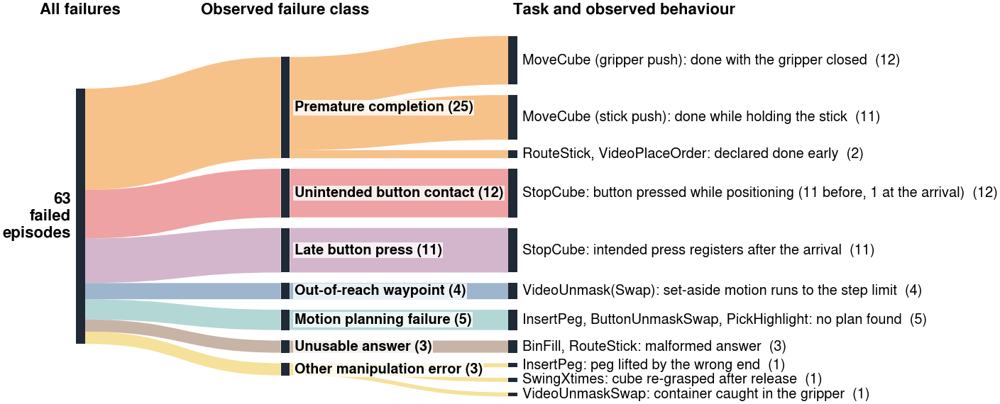

BinFill
49/50 solved“put three green cubes into the bin, then press the button to stop”
Harvard University
Success on the 800 RoboMME test episodes, as reported by each source. Light grey bars use RoboMME's oracle skill interface, in which a privileged planner executes chosen skills. Our result is a single run.
We use a frozen frontier vision-language model, GPT-6-Astra, directly as the robot policy on RoboMME, a benchmark of 16 memory-dependent manipulation tasks spanning temporal, spatial, object, and procedural memory. The model keeps the whole episode in context and outputs every end-effector waypoint and gripper command, with no RoboMME-specific training. On the 800 test episodes it succeeds in 92.1%, above the previously reported human score of 90.5%, which was obtained with an oracle skill interface, and far ahead of the best leaderboard entry (60.8%) and of a hierarchical system that pairs the same model with a RoboMME-trained policy (79.1%). It matches or exceeds the human score on 13 of the 16 tasks. Its 63 failures concentrate in two tasks and are mostly premature completions and mistimed or unintended button presses. These results blur the usual division between long-horizon planning, memory and end-effector control, and raise the question of how much of this stack a single general-purpose model can take over in embodied systems.

Each clip is one test episode, chosen as the success closest to the task's median length.
Remember how many times something happened or must be done.
“put three green cubes into the bin, then press the button to stop”
“pick up the red cube and place it on the target, repeating this action two times, then press the button to stop”
“pick up the green cube, move it to the top of the right-side target, then move it to the top of the left-side target, repeating this back-and-forth motion three times, finally press the button to stop”
“press the button to stop the cube just as it reaches the target for the third time”
Track objects that are hidden, covered or swapped while out of view.
“watch the video carefully, then pick up the container hiding the blue cube”
“watch the video carefully, then pick up the container hiding the green cube”
“first press the button, then pick up the container hiding the green cube”
“first press both buttons on the table, then pick up the container hiding the green cube”
Act on the object that was highlighted, picked or placed earlier.
“first press the button, then pick up all cubes that have been highlighteted with white areas on the table”
“watch the video carefully, then pick up the same block that was previously picked up again, finally put it down and press the button to stop”
“watch the video carefully, then place the green cube on the target right after the button was pressed”
“watch the video carefully, then place the green cube on the first target it was previously placed on”
Reproduce a demonstrated manner, grasp, pattern or route.
“watch the video carefully, then move the cube to the target in the same manner as before”
“watch the video carefully, then grasp the same end of the same peg you've picked before and insert it into the same side of the box”
“watch the video carefully, then use the stick attached to the robot to retrace the same pattern”
“watch the video carefully, then use the stick attached to the robot to navigate around the sticks on the table, following the same path”

Success rate (%) on the 50 test episodes of each task. Human players used RoboMME's oracle skill interface; PonderPounce-9B is the best leaderboard entry (joint-angle control, mean of 3 runs). Crimson marks our scores at or above the human score.
| Suite | Task | Human | PonderPounce-9B | GPT-6-Astra (ours) |
|---|---|---|---|---|
| Counting | BinFill | 96 | 50.7 | 98 |
| PickXtimes | 100 | 93.3 | 100 | |
| SwingXtimes | 80 | 72.0 | 98 | |
| StopCube | 78 | 82.7 | 54 | |
| Permanence | VideoUnmask | 90 | 94.7 | 94 |
| VideoUnmaskSwap | 92 | 25.3 | 96 | |
| ButtonUnmask | 92 | 97.3 | 100 | |
| ButtonUnmaskSwap | 90 | 34.0 | 98 | |
| Reference | PickHighlight | 92 | 85.3 | 98 |
| VideoRepick | 92 | 40.7 | 100 | |
| VideoPlaceButton | 98 | 83.3 | 100 | |
| VideoPlaceOrder | 90 | 79.3 | 98 | |
| Imitation | MoveCube | 90 | 81.3 | 54 |
| InsertPeg | 98 | 6.0 | 92 | |
| PatternLock | 84 | 12.7 | 100 | |
| RouteStick | 86 | 34.7 | 94 | |
| Average | 90.5 | 60.8 | 92.1 |
We audited all 63 failed episodes. Most are in two tasks: MoveCube, where the model ends with the gripper closed, and StopCube, where it presses the button too early or too late. Classes describe observable behaviour from the logs, not internal causes.

“watch the video carefully, then move the cube to the target in the same manner as before”
The model picks up the bar and pushes the cube onto the target, as demonstrated, but declares the task done while still holding the bar. The pushing variants of MoveCube require an open gripper at the end. This is the largest failure group (23 MoveCube episodes).
“press the button to stop the cube just as it reaches the target for the second time”
Waiting for the cube's second arrival, the model moves closer to the button “without pressing yet” (commanded fingertip height 3.8 cm), but the fingertips depress it too early and the episode ends (12 StopCube episodes).
“press the button to stop the cube just as it reaches the target for the fourth time”
The model counts the cube's crossings and presses on what it describes as the fourth arrival, but the press registers after the cube has passed the target (11 StopCube episodes).
“watch the video carefully, then pick up the container hiding the green cube, finally pick up another container hiding the blue cube”
After uncovering the green cube, the model sets the container aside at the edge of the arm's reach. The executor runs the motion until the 1300-step limit without reaching the pose (4 episodes).
“watch the video carefully, then grasp the same end of the same peg you've picked before and insert it into the same side of the box”
The model describes grasping the demonstrated end of the peg, but the environment judges that it lifted the other end and ends the episode.
@article{jedlicki2026frontier,
title = {Can a Frontier {VLM} Serve as a Robot Policy for Memory-Dependent Manipulation?},
author = {Jedlicki, Jack B. and Sethi, Amish and Yang, Heng},
journal = {arXiv preprint},
year = {2026}
}